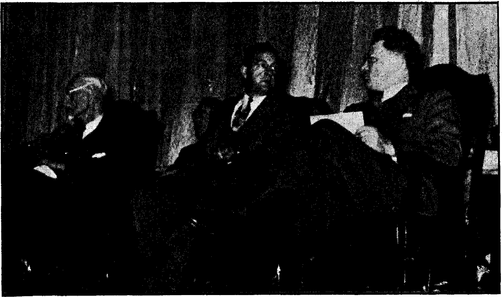

Contents
Freedom of Truth
Next to Government
People on Guard Danger to Freedom Growth of Monopoly 'Government Interference “What I Read in the Papers” Liberty Will Not Die ( Reviling Truth-Tellers
Religious Censorship Blowing Its Own Horn Free Press in War Christ a Publisher
Is Censorship Gaining Ground? . Service Assembly and Theocratic Business Meeting .
Theme of Theocratic Order Be titled Clerics De-glamourized The Legal Instrument Used “Go, Disciple All the Nations” Arrangements for Public Meeting “One World, One Government” , The Annual Business Meeting Why the Most Enjoyable?
Presenting “This Gospel of the Kingdoi The Emphatic Diaglott for Analytical (Part One)
The Nursery of Anti-Semitism La Bottega del Papa
3
4
5
6
7
8
8
9
10
11
12
13
14
14
15
16
17
18
19
21
22
23
25
Study
26
30
31
Published every other Wednesday by WATCHTOWER BIBLE AND TRACT SOCIETY, INC, 117 Adams St., Brooklyn 1, N. Y., U. S. A.
OFFICERS
President , N. H. Knorr
Secretary W. E. Van Amburgh
Editor Clayton J. Woodworth
Five Cents a Copy
$1 a year in the United States $1.25 to Canada and all other countries
NOTICE TO SUBSCRIBERS
Remittances: For your own safety, remit by postal or express money order. When coin or currency is lost in the ordinary mails, there is no redress. Remittances from countries other than those, named below may be made to the Brooklyn office, but only by International postal money order.
Receipt of a new or renewal subscription will be acknowledged only when requested. Notice of Expiration is sent with the journal one month before subscription expires. Please renew promptly to avoid loss of copies. Send change of address direct to us rather than to the post office. Your request should reach us at least two weeks before the date of issue with which it is to take effect. Send your old as well as the new address. Copies will not be forwarded by the post office to your new address unless extra postage is provided by you.
Published also in Greek. Portuguese, Spanish, and Ukrainian. ■
OFFICES FOR OTHER COUNTRIES
England 34 Craven Terrace, London, W^ 2
Australia 2 Homebush Rd., Strathfleld, N. 8. W. South Africa 623 Boston House, Cape Town
Mexico Calzada Melchor Ocampo 71, Mexico, D. F. Brazil Rua Licfnip Cardoso 330, Rio de Janeiro
Argentina Calle Honduras 5646-48, Buenos Aires Entered as second-class matter at Brooklyn, N. Y., under the Act of March 3, 1879. '
Jehovah’s witnesses in South Africa ___
♦ There is no report as to South Africa’s participation in the United Announcers’ Assembly of Jehovah’s witnesses (August 9-13), but the following is of interest as to assemblies held the month previous:
Last month there were three assemblies in Southern Rhodesia. There was one each for Europeans and Africans at Bulawayo. These served the witnesses in the western part of the country. The other assembly for African friends was held at Mrewa and served the friends in the eastern part of the country. These were the first assemblies held in that country for some years. [The Watchtower Society was banned early in 1941, and the ban was not lifted until January of 1944.] Although the police were in attendance, there was, of course, nothing for them to do except enjoy the meetings, and the friends were overjoyed at being able to come together again in that way. During the week-end 50 witnesses symbolized their consecration.
Definition of a Diplomat * ♦ A diplomat is a gentleman who can tell a lie in such a manner to another gentleman (who is also a diplomat) that the second gentleman is compelled to pretend that he really believes the first, gentleman, although he knows that the first gentleman is a liar, who knows that the second gentleman does not believe him. Both pretend that each believes the other, while they know that they are both liars.—Selected.
Knows Lutherans Believe in the DeVil
♦ George B. Watson, of Utah, writes:
Was glad to see the correction in Consolation No. 641 under the heading “Lutherans do believe in the Devil”. Now I am quite sure you have it right, because recently I witnessed to a Lutheran clergyman and found that he really believes in the Devil; that is, he believes the Devil told the truth in the garden of Eden when he said to Eve, “Ye shall not surely die.” He believes nobody really dies. And so, he thinks, all Lutherans believe.
CONSOLATION
■"
ft
CONSOLATION
“And in His name shall the nations hope.’’—Matthew 12:21, A.S. V.
Volume XXVI Brooklyn, N, Y., Wednesday, November 8, 1944 Number 656
Freedom of Truth
IT WAS raining in St. Louis. But a great crowd had gathered in the streets just the same, for the papers had announced- the armistice ending the hostilities of the first world war. The people danced in an abandon of feeling before the Post-Dispatch building. But the editor of that paper said nothing about an armistice. Nothing exciting appeared in that day’s edition. The editor explained, “A comparison of the news [of the armistice] with the map made it perfectly apparent that the German plenipotentiaries could not possibly have reached the French border, much less Foch’s headquarters.” He was right. The real armistice was signed several days later. The editor was not satisfied with giving the readers merely the surface of the news. He did not consider his job done if he printed only the external facts, which might give the reader a misleading view and not the true picture. 0. K. Bovard was interested in giving them the truth. But he ultimately lost his job. The owner of the paper and he had a difference of opinion.
Says Frank Honeywell in Current America:
In order to be news, “news” must be true; otherwise it is not news. “News,” distorted, politically biased, temptingly featured, couched in language highpowered out of proportion to fact, is not news. “Newspapers” so de-f acted are not newspapers. “Newspapers” demand freedom of the press.
He goes on to make a distinction between real newspapers and the so-
N0VEMBER8, 1944 called “newspapers”, and distinguishes the genuine from the false by putting quotes around the latter, thus: “newspapers.” Of these he says:
The people today are slaves of free “newspapers”. They are bound with the chains of fugitive fact, fantastic features, feverish phraseology, fake “Finals”, flatulent. “Funnies”, flippant philosophies, fervid femininity, philter-photography, Frenchy fiction, famous-filmfolk flatteries, fashion fopperies—all forged and finished to the tune of the fabricated falsetto that this is -what the people demand■ *
What he says is more fact than fancy. The “newspapers” do give the people everything short of honest-to-goodness news. But it is these same “newspapers” that do a lot of talking about “freedom of the press”, which is all right, too, for it at least gives lip service to that indispensable freedom.
But these same “newspapers” have a very limited conception of the “freedom of the press”, conceiving of it as a special privilege to be employed to their own advantage, their personal profit. And the people esteem real freedom so much that they are tolerating its abuse by “newspapers”, at least for the present. And, too, there are men in the newspaper world who appreciate the real meaning of this important freedom.
It is not so long since .1. G. Stahl-man, the then president of the American Newspaper Publishers Association, addressed the assembled publishers as follows on the subject of freedom of the press:
3
Its freedom, which is not primarily the privilege of the publisher but the prerogative of the reader, must be safeguarded at continual cost and sacrifice against predatory interests, political and private, by whom it has been assailed from the time the printing press was invented down to the present day.
Besides saying this, he gave a rather high estimate of Americans, and further stressed the importance of freedom of speech and of press, as follows:
[Americans] bend no knee to earthly dictators but to God alone because we, as a free people, have met and checked every effort to thwart or abridge freedom. All these freedoms are lost without a free press. An unfettered press is the best guarantee of the preservation of the others. Liberty has perished where these fundamentals have been abridged or abolished. ... ■ Ij . ■ . ■ . ■
1 >
Speaking over WHK, one of the stations that denied freedom of speech to Judge Rutherfqpd and Jehovah’s witnesses, Peter Witt declared that the greatest of the ten constitutional guarantees under the Bill of Rights is the first, freedom of speech and of the press. He further said:
■ ' . T J " . ...
Without either or both, democracy is impossible? It, therefore, follows that every citizen interested in protecting and defending the democratic state must be ready at all times and under all circumstances to insist on this right, not only for himself, but for alt others, regardless of what they may want or not want to say.
Mr. Witt suggested that the words of
Thomas Jefferson be carried at the mast-
>■■ ■ r , I . ' ■ ■ . - . J J i.
head of every newspaper, namely, that
I . ■ ■ ■■■• .5 L 1 ■ ■ ' . ■ ■ । ' '
v-T ■ '7 - ■. ~ ■...... 7’ ' ”, 7'7 . ' . '
Error, of opinion may be tolerated when । ■ ' ■ ■ -■
reaspu is left free to combat it. .....
' i •' r " ' — ■ . r “u ' ■ ■ ■ ' — —w. ■ ji — . ■ . . .
ft r to '■ ‘ ... ■ -t ■ i ' ■ - .■ ■ ■ ■■ ■
; -t 7/.•• •. ■■ ■■ J L ■■■ ■' ■.■ ■ . ■ ■
— 7 ■ ir1 r-r .-.'-i. % ■ ■ -r - ■■ 7 ■ J - L- - ■, , . • _ . . *
Next to Government
Secretary of State Hull, praising the
American press: for,’ its efforts to maintain an alert: public opinion, stated that: he considered the- work of news corre- r
I — - - — spondents as second in importance only to the work of the government itself. A. little reflection will confirm this opinion.
The first thing dictators are alert to do when gaining power is to interfere with freedom of the press by means of a strict censorship. An oppressive totalitarian government cannot survive where complete and accurate information is generally available.
Totalitarianism cannot exist where exists that which the Dutchman Hendrik Willem Van Loon describes as the liberty which, meant the integrity of the individual, the freedom of the mind and, above all things, the humanity of the heart.
The importance of the press to decent government is in considerable measure indicated by the fact that specially favorable postal rates are accorded periodicals. This concession is in the nature of a subsidy, according to Harold L. Ickes, secretary of, the interior, who said:
As a matter of fact, the American government annually pays an enormous subsidy to the press in the form of less-than-cost postage rates. This subsidy in 1936’amounted to some $90,000,000.
Of this, great sum, including all sorts of periodicals, it appears that the newspapers benefit annually to the total of about $29,000,000, according to the newspapers. There is quite a difference between the two estimates, but, in any event, the virtual subsidy is admitted, and on the ground that newspapers are beneficial to the community. It has been remarked that the s grocer also fulfills a need, but he can’t deliver food free. But newspapers within the county may be sent free, Where no carrier service is provided. In this way small-town publishers are benefited. America needs all the independent publishers it can keep.
The point is that the news is important to the people and the government. In this connection a statement by Kent Cooper, executive director of The Asso-
' ciated Press, as reported by Common
‘ Council, said:
t The most powerful thing in the world is . truth. If news may flow freely, if controls permitting systematic distortion are rigidly prevented, we may have an abiding faith, that the truth will prevail. Truthful world news, I am convinced, can be assured only under the following conditions: First, by guarantees of freedom of the press in each country; second, by insuring equality of access to news at its source by news agencies, native and foreign. This would preclude the danger of government control and subsidized agency poisoning or throttling of the flow of news. Third, by insuring equality of all in availability of news transmission facilities. Fourth, if not a penalty for distortion of news, at least a declaration in denunciation of that form of news presentation.
Secretary of State Cordell Hull, as reported by the same agency, said:
There has never been a greater need for an alert public opinion than there is today. It will continue to be increasingly greater until victory has crowned our efforts and postwar problems have been settled. You (newspaper correspondents) will perform a tremendous function for good or bad, according to the skill and intelligence and practical judgment with which you aid in developing and keeping thoroughly alive what we call an alert public opinion.
Such being the case, the following by Charles Edward Russell gives one pause:
Every day in the year some thousands of newspapers are not so much, in the old phrase, moulding public opinion as perverting it and poisoning it. Often unconsciously; sometimes consciously and unwillingly; but always under the pressure of a condition so inexorable that it leaves no choice. . . . The real government lies in the hands of the men that control the news columns of our daily journals. Who are they? The men that also control our great industries, railroads and financial interests.
: ____________ - ■ ‘
Dorothy Thompson’s experience confirms this charge. She reflects:
Just try in the column of a newspaper to
X
say a few harsh and critical words about an A
industrial product! I once remarked that I thought the ordinary bakers’ loaf of bread in this country could radically be improved, and I and the paper were immediately subjected to blackmail from the bakers’ associations. . . . Just try writing an article in a magazine criticizing the organization or labor policy of a business, and see what happens to the advertising. Hundreds of thousands of dollars of advertising are canceled in this country every year because manufacturers or merchants don’t like remarks made in the news columns.
People on Guard
The people are by no means unaware of the state of the press. It has never been highly esteemed, even though not all attacks upon it are honest and many are based on ignorance. A hundred years ago the Philadelphia Public Ledger stated:
Our opinion, and an opinion founded on extensive acquaintance with it in every one of the states, is that, with some few exceptions, the character of the American press is very contemptible.
Though in the presidential campaign of 1896 the press thwarted the people, it was less successful in 1936. The radio serves as a curb on the power of the press, as do also independent magazines of various kinds. The people are therefore increasingly on guard against deception.
It is not so long ago that Fortune magazine conducted a survey to ascertain what was the attitude of the people in regard to banks and bankers after the way these failed them in the crisis, allowing some years to elapse so that their resentment might have an opportunity to cool. The question was approached indirectly, in this way: “Do you believe that any of the following abuse their power: bankers, press, radio, pulpit, veterans?” Results were' a surprise. While there was still much resentment over the way the banks had fleeced the people, the press was marked as the blackest sheep of all. Of the replies received, 41.8 percent put the press first on the black list. Bankers led on 38.3 percent; pulpit, on 26; veterans, 23.4; and radio, 21.8.
The repudiation of the press by the American people,, particularly in the 1936 presidential election, was very evident. While it was not a complete repudiation, it marked a definite popular disillusionment. The attitude was well expressed by George Seldes, in Equality:
Intelligent people no longer trust their newspapers. Even the less intelligent, for example, the readers of the Hearst press, are skeptical about the colored, distorted and frequently untrue stories which it provides as straight news. ... It is true we have to buy the newspapers daily, but we must never lower our guard. We must never forget that they are the representatives of certain parties, groups, interests and even ideologies and that not more than half a dozen in the United States serve the general welfare. ... We haven't a dozen papers for an honor roll. And if the United States, with 2,000 dailies and 15,000 weeklies, cannot name three newspapers equal in integrity to the Manchester Guardian [England] it has no right to speak of having a free and fair press. r1
A writer in the Forum of February, 1939, indicates that the policy of the newspapers generally is greatly influenced by trade journals "of the fourth estate”. He says:
The bible of all high-church newspapermen is Editor and Publisher. This valuable weekly has long been considered the mouthpiece of the profession. Its influence and the respect for it among publishers are legend. American Press and Newsdom are two other trade publications of considerable influence . . . And you don't have to look far in any of them to find "smugness" written in letters ten feet high.
Does a layman dare protest that “freedom of the press" sometimes more nearly approximates/license by the press"? He is unjustified and misinformed. . . *
Has a professor told his classes that the press does not live up to its potentialities for performing, public service? He not only is ’ unjustified and misinformed but he is a danger to the young and maybe even a red.
On the other hand, if Grove Patterson, Jimmy Stahlman, Bertie McCormick, or any other of the press canons makes similar charges, he is greeted, if not with hallelujahs, at least with scattered amens.
Among themselves, therefore, the newspapermen are quite ready to admit their infidelity to their trust, but to the public they still try to appear sacrosanct. One of them, John Swinton, made an admission which found its way into the columns of the North Bay Labor Journal. He said:
We are the tools and vassals of rich men behind the scenes. We are the jumping jacks; they pull the strings and we dance. Our talents, our possibilities and our lives are all the property of other men. We are intellectual prostitutes.
Danger to Freedom
That the great power of the press, in spite of people’s distrust, is a real threat to freedom of the press, is increasingly manifest. Representative Martin of Ohio, Republican Congressional leader, however, views the danger from another angle, indicating that the question is not so much one of whether the press shall exercise freedom as it is of whether it shall continue to surrender that freedom ' to Mammon or subject it to governmental encroachments. The alternative may well be the greater of the two evils. He said:
Whatever threats may face this nation from power-lustful aggressors abroad; whatever menace may lie in the actions of dictators in lands across the sea, one real danger to our nation here lies in the slow but undeniable suppression of freedom of the press. If the people do not stand together to uphold the free.dom of the press, their newspaper cannot long uphold the freedom of the people. There is not a single more important issue before the American people today than this question 1 .
f of the freedom of the press and the radio, and . of free speech.
These fears were expressed before Pearl Harbor, and there were evidently grounds for them. Grove Patterson, editor of the Toledo Blade, about the same time expressed similar misgivings, saying:
Newspapers and all enterprise face a common enemy. We are face to face with a cramping, crippling and, worse than all, ignorant bureaucracy that day by day is seeking to regiment us into a retreat toward an equalitarian destitution. . . . the free newspaper is the major defense that can keep one man or one group of men from stealing a government and operating it in the interest of a privileged few. The old proverb has it that what you don’t know won’t hurt you. Not so in a democracy. What you don’t know will destroy you.
Because freedom of communication is of such paramount importance any kind of taxation, aside from the general taxes levied upon all, has been strenuously fought by publishers, a fight which has always had the enthusiastic backing of the people. In the decision of the Supreme Court voiding the Louisiana newspaper tax occurred the following:
In the ultimate, an informed and enlightened public opinion was the thing at stake; for, as Erskine, in his great speech in defense of Paine, has said: “The liberty of opinion keeps governments themselves in due subjection to their duties.” In 1785, only four years before Congress had proposed the First Amendment, the Massachusetts Legislature, following the English example, imposed a stamp tax on all newspapers and magazines. The following year an advertisement tax was imposed. Both taxes met with such violent opposition that the former was repealed in 1786 and the latter in 1788.
The need for preventing government from controlling the channels of communication is evident from the following statement by Frederic W. Collins, Washington correspondent, in the Providence (E. I.) Journal Bulletin, and reprinted NOVEMBERS, 1944
in the St. Louis Post-Dispatch of May 1,
The president plays the game of writing our stories for us, and even making up our front pages for us. . . . The natural inclination of government to conceal its mistakes is at the bottom of the policy. Mr. Roosevelt, however, has helped to develop the suppression, canalization, and influencing of news to a fine art. . . . Anyone who has watched him at close Quarters for any length of time knows that he likes to do things in secret.
Growth of Monopoly
The North Bay Labor Journal, noting the threat, to real freedom of the press that lies in the steadily disappearing competition from the newspaper field, points out that
Editors and publishers have strengthened the monopolistic value of Associated Press » memberships, of the franchises for other newsgathering agencies, and of contracts with feature syndicates.. .. The latest figures showing what is happening are these: The number of one-daily-newspaper cities has risen from 353 in 1899 to 686 in 1919 and 1,088 in 1939 even though the total number of dailies is about the same in 1939 as it was in 1899. . . . Only 209 cities now have allegedly competing dailies.
Not only are American newspapers affected by this tendency toward concentration and monopoly, but newspapers of other countries are also involved. Kent Cooper, of The Associated Press, in his report for 1940 stated:
As of April 20, 1940, there were 722 newspapers receiving directly all news service from either The Associated Press of Great Britain or The Associated Press of New York. These newspapers are located in England, Scotland, Eire, Denmark, Australia, Canada, New Zealand, Fiji Islands, Mexico, Honduras, Costa Rica, Nicaragua, Panama, Cuba, Dutch West Indies, Venezuela, Colombia, Peru, Bolivia, Chile, Argentina, Paraguay, Uruguay, Brazil, the Gui anas, Ecuador, British West Indies, Guatemala, China, Japan, and France.
Naturally the great press associations tend to control the news. The Reuter news agency, a world-wide news-gathering organization, formerly owned solely by the Press Association of Great Britain, is now shared by the Newspaper Proprietors Association, a more or less competitive group. This was hailed as a bar to monopoly but has the aspect of a greater combine’s being created. It is stated, however, that “scrupulous precautions against monopoly have been inserted in the new constitution of Reuters”.
Government Interference
While the greatly increased power of the press and its agencies thus constitutes a threat to freedom, it may, on the other hand, serve as a check to un-. warranted exercise of power on the part of government. This in turn results in governmental interference with the freedom of the press on occasion, an interference which is as hateful as it is dangerous. Hence Jas. G. Stahlman, addressing the American Newspaper Publishers Association, said:
*
The press of America is determined that it will never submit to censorship by legislative enactment, executive fiat, the tingle of tainted money, nor bullets from the dark. Democracy is making its last stand and its bulwark constitutes the guarantee of free speech, a free press, the right of assembly, freedom of learning and freedom of conscience.
Newspapermen do not appreciate the fact that barbed-wire barricades and bayonets excluded them from some kind of representation at the Cairo and Teheran conferences. It didn't seem just right to them that four men should decide the fate of the world. Says columnist Samuel Grafton:
J*
But is it really true that we have placed our damp little paws in the hands of four men and told them to take us wherever they please? The conferences look that way; the armed guards look that way; this seemingly submissive world, forever waiting to be handed another communique, looks that way. But how did we get to this point? How did we come to Teheran? We didn't get to Teheran in ten minutes, nor by following a straight line, either. It has been a long trip, with stopovers in curious places, such as Geneva and Munich. I
“What I Read in the Papers"
Under the laconic heading ‘I Only Know What I Read in the Papers' Labor (Washington) remarks editorially:
How much is an American safe in believing of the reports in his daily newspaper concerning what is going on in the countries involved in World War No. 2? An answer to that question comes from an authoritative source. . . . That answer is to be found in a curious publication called the “Goldfish Bowl". It is edited by a committee of prominent newspapermen and its circulation is limited to members of the National Press Club. In its J
latest issue, the “Goldfish Bowl" prints a first-page editorial entitled “War Censorship". Here it is:
“Pity the so-called war correspondents, and the papers in this country which print their alleged ‘news' dispatches!
“There has never been a time in journalistic history when our overseas scribes have been so fettered as now. And that goes double for ’ their papers back home. It goes without saying that correspondents in Berlin, Rome, London, Paris and other centers of kaleidoscopic events are strictly censored. At bqst, their efforts are gauged to the propaganda of the respective warring countries. If the ‘regulars' attempted—which, of course, they don't —to send through candid reports on actual conditions and observations they would be quickly expelled, or worse.
I
Other countries besides those in the war zones are putting on the clamps.
Brazil has the following interesting provision for control of the news within its borders, and measurably that which goes out: The law allows foreign news agencies to have branches in Brazil and to transmit news abroad or to distribute
CONSOLATION h i - i
foreign news to Brazilian niewspapers, but forbids them to handle domestic news for domestic distribution. Foreign news agencies and foreign correspondents must file a copy of all news items, either cabled .or mailed. Foreign correspondents are obliged to register and furnish proof of their calling.
Argentina has demonstrated its power over the press by suspending its most powerful newspaper, La Prensa, for several days. On the day of its reappearance La Prensa carried an editorial stating that on the same day, 91 yearS ago, 'the x Argentine Constitution >was signed, to “insure the benefits of freedom for ourselves, for our descendants, and for men from the whole world who wish to live on Argentine soil”.
El Salvador, early this year, suspended all newspapers blit one, the Diario Nuevo, which is the government mouthpiece. An overthrow of the government had been attempted.
On the other hand, in many countries of Europe there is an underground press which is free, at least to the extent of publishing what they wish, though at the risk of the lives of the publishers. The newspaper of General Mihailovitch is hence appropriately called “Liberty or Death”. In Norway thirty underground publications continue to harass the Nazi intruders. In Poland there are 140 secret journals of one kind or another. In Belgium La Libre Belgique, also circulated during the last war, continues to appear. The Greeks continued to defy their oppressors by the publication of thirteen underground newspapers and two broadsheets. Other countries, too, a total of at least nine, have their underground presses.
Liberty Will Not Die
Prominent among the forces that war on the freedom of the press is religion, particularly as represented in the Roman Catholic Hierarchy, which is often in close “cahoots” with the governmental proponents of suppression. When Chamberlain was anxious to halt the “war of words” that questioned his appeasement policy, his effort or desire to muzzle the press was seconded with alacrity by the Roman Catholic cardinal, Hinsley, who said that peace would be safe if “we” could muzzle the press, a reference which was endorsed by the Vatican newspaper Osservatore Romano. At the time the press of Germany and Italy was under control, and could be stopped immediately, while in France the government had taken drastic steps in the same direction. Similar efforts were on foot in
England but met with less success. Sir Arnold Wilson (a defender of Franco) suggested that the British government consider whether they should not take voluntary powers “to enable the press to control itself, or at least the headlines” (which would be a start). “We should do so,” he said, “without hesitation on the outbreak of war,” which was then practically certain.
Romanist attacks upon the freedom of the press are generally subtle and indirect. One of these was through a bill with a provision “to bar from the mails papers, pamphlets, books, etc., containing any defamatory and false statement tending to expose persons of any race or religion to hatred, contempt or ridicule”. With a Catholic postmaster general such a bill could be made to serve the purposes of the Hierarchy very effectively. The board of directors of the Washington Federation of [Protestant] Churches, however, was unanimous in its opposition to the bill, stating,
This bill represents a dangerous attack on free speech, and is extremely unwise in threatening with criminal penalties any person with whom the postmaster general may disagree as to what is defamatory or false.
However, the Hierarchy is not easily discouraged, but continues to try here and there, to see what it can do. A “police censorship” of books was proposed in San Antonio, where Police
Commissioner P. L. Anderson received complaints that book stores and rental libraries had been furnished with lists of 36 books “in violation of the penal code of the state of Texas and ordinances of San Antonio”, which they were requested to remove from their shelves. The envelopes in which the lists were sent bore the printed signature of “Archdiocesan ; Catholic Action Council of Men”. The “officials” of this “council” stated that the list was prepared nationally and that it was their understanding that the police department was to send them out! This “pious” effort raised quite a furore, and Commissioner Anderson made it plain that there would be no censorship by police of books sold in San Antonio. Catholic Action is living up to its antecedents.
Reviling Truth-Tellers
Another method of suppressing the truth is that of casting aspersions on its proponents. This America and the Catholic Telegraph-Register (both Catholic publications) proceeded to do in the case of L. H. Lehmann, ex-priest, when his ably presented articles on the Catholic Church in Politics appeared in the Aew Republic. Says the Telegraph-Register:
America throws light [ I] on L. II. Lehmann, the “ex-priest” who has been writing antiCatholic articles in the New Republic. He “is an Irishman educated for work as a priest on the foreign missions who tired of the mission; came to the United States and failed as a curate and pastor; who tired of the priestly functions and failed in his vqws by marrying; who tried to establish a church in New York where married priests [horrors!] were the celebrants of mass, and failed; and who now rides the waves of success through the publication of his views in the New Republic." If all Catholic priests in the United States were like Lehmann, Bruce Blivcn, editor of the New Republic, “might bestow his approval on the Catholic Church.”
The above does not attempt to answer Mr. Lehmann’s article at all.
This is characteristic of the Hierarchy’s methods in suppression of the truth. Judge Rutherford received similar treatment at the hands of one “Father” Felix, of Missouri, who recommended a beating, but did, not answer a single argument. ' :
A favorite charge of the Catholic press is that the American press is salacious and sensational. This is only partly true, but serves the aims of the Hierarchy. Richard Reid, editor of The Bulletin (Catholic), in a lecture given at the University of Notre Dame (“Our Lady”), said that such conduct on the part of the press is an abuse of the freedom of the press which “may become in public opinion such a danger to the morality of the nation that suppressing of that freedom will be considered the lesser or the least of the evils”.
That subtle ruse is characteristic of the Hierarchy’s methods, but it will not work. Pious pratings about “morality” come with poor grace from an organization that furnishes us large a quota of criminals as does that religious system. And what is more, such “morality” bait is simply to befuddle the innocent, who do not know that Hierarchy-dominated lands are the lowest in the scale of morality as well as of intelligence.
The Telegraph-Register also came out With this gem on freedom of speech and of the press, both of which are under constant attack in the Hierarchy press:
Liberty of assembly cannot mean that the leader of a mob is free to say: “Let us burn down the city hall.” Liberty of the press cannot mean that a writer may advocate murder or arson. Liberty of speech cannot mean that a man may say: “Let us put to death all red-headed children!”
This profound wisdom had not occurred to the men who framed the greatest constitution that the world has seen. They entirely overlooked mentioning it, and so, judging from the wisdom of the Telegraph-Register and its religious publishers, everybody- doubtless has the
idea that freedom of the press, speech i and assembly meant just that! But no, i. there are other ways of combating such notions than by shutting off everybody’s wind forthwith. Inquisition methods, still, defended by Rome and its representatives, are not admired.
’ It is not necessary to carry out Hinsley’s typically religious idea and his expressed wish <
that we might muzzle the press, dismantle the printing presses, close the cinemas— muzzle the world—and let the poor people go quietly about their daily business.
Yet the Osservatore Romano said that every hour which passes proves how profoundly right this wish is, and how necessary it is to have it carried into practice.
So the people could be reduced once more to the condition of ignorance, squalor and misery that existed during the dark ages of the worldly church’s supremacy, and which conditions still exist, though somewhat moderated, in countries subject to its dominance.
Religious Censorship
Besides indirect attacks upon the press and influencing what goes into its columns, the Hierarchy seeks to control the source of information by insisting that writers who measurably recognize its authority submit to her ecclesiastical censors what they write. On this point, Lawrence A. Fernsworth, an honest Catholic layman and newspaperman, had this to say:
Even had I regarded the Spanish bishops as being good Christian gentlemen I could never have followed the public and private injunctions of the Jesuit editors of America that ‘Mr. Fernsworth should have submitted his views [of the Spanish rebellion] to the Spanish hierarchy’. Apart from the allcompelling consideration of professional integrity, I could never under any circumstances have submitted my views to a group of men whom, in their majority, I had, by my perhaps inadequate standards of Christianity, to consider as more pagan than Christian.
• But in spite of these various methods of suppressing freedom of the press, the Hierarchy is not making the progress that it would like to see. It has other jrons in the fire, too. It has its own press 'committees, all of which were consolidated a few years ago for more effective action. On this subject the Christian Century stated:
' 1
Truth is mighty and will prevail. So we have all been taught from infancy. But falsehood is also fleet of foot and long of wind. If it does not endure to all eternity, it sometimes flourishes for a long time and does much damage while it lasts. Opinions, whether true or false, are disseminated, not automatically, but through human agency. That is one purpose of education. It is the chief purpose of the periodical press. Therefore, it is no presumptuous meddling, but a policy of good sense to speed truth on its way and check error by refutation. Such reflections come to mind as one seeks to understand the recent consolidation of press committees of many Roman Catholic societies and agencies for the avowed purpose of checking what they call “anti-Catholic propaganda”. This movement originated with the Jesuits and has been promoted by the able and energetic Jesuit weekly America, chiefly under the advocacy and direction of the Rev. John A. Toomey, S. J. . . . The procedure of this consolidated “press relations committee”, in so far as it has yet been developed, is to have a subcommittee for each important newspaper and magazine, to “keep a sharp lookout for anything in the nature of propaganda injurious to Catholicism”, to interview editors and secure retractions or apologies when anything is published that seems sufficiently injurious to warrant action, and to spread the word among all Catholics as to which papers and magazines are favorably disposed and which do not respond to the committee’s representations.”
Given such attention, it is not surprising that newspapers are very careful to give earnest consideration to Hierarchy demands and protests, voiced to these Xpress committees”. The result is something like this, according to T. T. Shields, of Toronto:
It is the policy of The Globe and Mail to allow Roman Catholics tp use its columns for the propagation of their view, and the Globe and Mail columns are closed to every Protestant who attempts to reply. *
Another instance is that of the Baltimore Sun, concerning which The Nation has this to say:
In one article a paragraph six fathoms deep compared Hitler’s fanaticism to Ignatius Loyola’s. The analogy prompted a mild complaint from the Jesuits, but an editorial letter soothed them. Then Curley . . . was apprised ,x
of the insult. The archbishop burst into a thousand blazing little pieces. He demanded an immediate and utter apology, and when every formula that the Sun put forward failed to satisfy him, he had the journal denounced from all the parish pulpits in the archdiocese and initiated a Catholic advertisers’ boycott. The attack continued for months, until, on the hinted advice of a Washington priest that there was no statement the Sun in self-respect could make that Curley would approve if consulted, the Sun issued an unapproved apology, going as far as it could; and the furor died down. The incident allowed the Sunpapers to feel painfully the weight of the church’s hand. Though Mencken declares that subscriptions slumped very little . . . other estimates set4 the circulation loss at 50,000. Since 1934 the Sun has dealt tenderly with the Catholic church. A Protestant minister complained to me that the Sun gives from two to four times as much space to Catholic activities as to Protestant. Part of this disproportion may be because the Catholics, for their number, are more active.
Or make more noise.
Blowing Its Own Horn
The Hierarchy is not backward about coming forward, and knows how to toot its own horn. The following, from the Catholic Press Association, shows how interestingly this can be done:
Resolved: that the Catholic Press Association reaffirms its belief in, and attests its devotion to and promises its championship of, the principles on racism so eloquently and in so Christlike a manner pronounced by the late pope, Pius XI, and so magnificently upheld in glowing word and effective act by the reigning pontiff, Pius XII.
Not bad! This was delivered on the occasion when, according to the headline, “Catholic Editors Denounce Racism.” Thus, in America, for the purpose of impressing the Jews and the colored population, Catholic editors can denounce what another tool of the Hierarchy carries on, in the destruction of the Jews, in Europe. Further, the delegates of the Catholic Editors Association heard a motion from “Father” Gillis, editor of the Catholic World, to the effect that the Catholic Press Association rebuke all secular newspapers it believed to have reported the Spanish civil war unfairly. The motion was passed unanimously. And so freedom of the press is attacked by the Hierarchy by all the power at its command.
Still another neat trick is that which was “pulled” by the Catholic New World, of Chicago, at the time of the strike ' against the Hearst newspapers of that city. The Catholic Herald has this to say on the subject:
The Chicago New World, official organ ' of the archdiocese of Chicago, has created a sensation by urging support of a strike directed against the Hearst newspapers of that city. The New World won for itself and, incidentally, for the Church, the plaudits of labor leaders when it not only expressed its sympathy for the strike, but also published news of the strike—the only newspaper in Chicago to do so.
When it comes to publishing news of strikes, it must be admitted that secular newspapers are not too ready to give the full facts, particularly if another news- • paper is involved. However, it well suited the purposes of the Catholic New World not only to give this particular
I
I strike publicity, as all papers should, but J to express editorial (hence ecclesiastical) sympathy for the strikers. Influence with ■ labor interests the Hierarchy in no small j degree. The London Catholic Herald ; remarked, in this respect:
ft ft 1
The incident is an interesting example of the growing influence of the Catholic Press in connection with labor.
That the Hierarchy is not a true friend of labor is only too obvious from its dealings with the common people in largely Roman Catholic lands, where labor is given hardly enough for bare subsistence. It is up to the press to give the people all of these facts so that' they may have the complete picture. Otherwise the press fails, as it has largely failed, of its purpose. In the words of James G. Stahlman:
A free press does not mean my right as a newspaper publisher to publish whatever I please, to violate any laws, to invade personal privacy or to ignore the ethics of a great profession. A free press does not mean my obligation and responsibility to keep you informed through a truthful and unbiased presentation of the news. A free press does mean my responsibility to comment fairly and intelligently in the editorial columns in order that you may reach sound and enlightened decisions. A free press is no publisher’s right. It is the sole right of a free people, and newspapers are but the trustees of that right.
Free Press in War
Free speech and free press are so closely related that what is true of one is true of the other as well, the one being the free communication of information by word of mouth; the other, free communication by means of the printed page. Before America entered the war there was considerable fear that these freedoms might be doomed. The Cleveland Plain Dealer, however, concludes that the exact opposite has taken place. It says: < . •
— . —
Despite the fact that this war has been ' J
NOVEMBER 8, 1944
much more political in nature than the last, despite the fact that enemy agents and propaganda have been much more active within the country this time than in 1917-18, bur civil liberties have if anything been Strengthened since Pearl Harbor. This is due in part to the Supreme Court’s decisions in the Jehovah’s witnesses’ cases ...
This is an acknowledgment of the fact that Jehovah’s witnesses have actually been in the vanguard of freedom, fighting for liberty on the home front amidst persecution- and misrepresentation on a colossal scale. Religionists, particularly the Roman Hierarchy, have strenuously and even viciously opposed this struggle, but the Witnesses have, by Jehovah’s help, stood their ground, and God has given them the victory before the highest court of the land on more than one occasion. These cases are now history, and vitally important history. They have resulted in a wide recognition of the fact that what the newspapers should do has been done by others with more fidelity. Here an excerpt from the Paterson Evening News is of interest. ' ■ ■ : ■ ■ ■ ■ . I, . I. .
■■ '■ '■ ■ • / ' ■ ' , ■ I
As a matter of fact daily newspapers are the chroniclers of news events but they are not necessarily the sole medium of public discussion on important affairs. In every dictatorship, when the dictators start to throttle the prcssrthey think not only of the newspapers but very particularly of books, pamphlets and other means of disseminating ideas through the medium of the printed word. This phase .of the subject often escapes notice but it is highly important. . . . A gre^t deal of the public discussion of American affairs is conducted in this way. Freedom of the press means freedom not only of the newspapers but freedom on the part of any individual to print what he thinks hnd to circulate his ideas in • printed form. The loss of this freedom might not strike many persons ■ '■ J ■ I ■ ! Hl . ■
as very important, blit it is one of the most . .. - - -L - - ■ ' vital points in the Bill of Rights.-Freedom to print books is only another
freedom to print pamphlets, fora controversial book is nothing but a large pamphlet
■s _
with a permanent cover. When we see the dictatorial countries seizing books and making public bonfires of them [as was done with Jehovah's witnesses' literature in Germany and other lands], we begin to realize how far-reaching this freedom of the press really is. tf instead of saying “freedom of the press", we said “freedom to print", the real meaning of the Bill of Rights on this point would be much clearer.
Christ a Publisher
In conclusion, an editorial in the Wayne County Press furnishes food for thought. It says:
I
Just last week a subscriber wanted to know why we did not try to run this paper a little more along the lines of how Christ would edit a paper. We don't know just how that would be. In the first place, if Christ were to come back to this mundane sphere we don't believe He would go into the newspaper business at all. There is not an editor or a preapher in the world who could tell the truth, the whole truth, nothing but the truth, for thirty days and stay in the community in which he lives.
This rather startling reflection leads to the further thought that while Christ is not personally going to engage in the publishing of a newspaper, He nevertheless has His followers doing that very thing, and there is no reason whatsoever why "this gospel of the Kingdom", which is to be published, as news, in all the world, for a witness unto all nations, *
should not be proclaimed by means of the printed page as well as by word of mouth. Indeed the written and the printed word have, since earliest times, played a most important part in the evangelization of the world, that is, the instruction of all who will hear in the all-important knowledge of God’s kingdom, The Theocracy. But that work was to take on actual world-wide proportions and scope when Satan’s world is at an end, and the New World of Righteousness is brought forth by the Almighty himself.
Is Censorship Gaining Ground?
It is to be expected that Satan, over-lord of the old world, will resist expulsion. Censorship is one of his instruments. This is being resisted in turn, not only by Jehovah’s witnesses, but by all who in one way or another are concerned in its application. While there is still much "freedom to print”, the forces of reaction are not giving up the struggle to suppress it as far as they may. Various methods have been/ considered. One more possible means remains for attention. A shortage of paper has been forecast by the Office of Production Management. In the hands of interested parties the power to curtail supplies of paper could be used to interfere with the publication of unwelcome truths. No such partiality Jias been shown by the responsible agencies as far as present information indicates. However, here, too, lovers of freedom must be on guard, lest by some subtle means the material necessary for the publication of vital information, opinion and comment be denied where its denial will serve the ends of those who hate the truth.
Until that which is perfect is come, eternal vigilance is the price of freedom of the press as it is of all other freedoms. As has been seen, big business, big politics (through government) and big religion are all interested in curbing if not entirely suppressing this vital freedom. The means employed are boycott, intimidation, denial of postal privileges, and may include a limiting or complete denial of the means of publication, paper. On all of these fronts those who love the truth must continue to fight for liberty by every legitimate and divinely approved means at their disposal. Those who have been called to freedom, for which Christ has set them free, must not be entangled again with the yoke of bondage.
Held in Pittsburgh, Pa., Sept. 30 to Oct. 2
EHOVAH GOD has business in the earth. Though the combine of religion and politics and commerce impudently says, “Let God run heaven, we will run the earth,” the Almighty Creator in heaven’s heights is not bound by this “hands off” policy men set for Him. His sphere of business very definitely takes in this globe. Not the profiteering kind followed by religionists, to be sure; for Christ Jesus when on earth drove out of His Father’s house such money-grabbers. (John 2:16) Yet this Chief Representative of the heavenly Father said: “I must be about my Father’s business.” (Luke 2:49) The divine business then was to “bear witness unto the truth”. It is the same now. And, as in times past, He now commits it to faithful earthly servants. (John 18: 37; Matthew 24:45-47; 1 Samuel. 21: 2, 8; Nehemiah 11:16,22) Nonetheless, it is still Jehovah God who directs His earthly business.
Never'was this more clearly manifest than at the recent service assembly and annual business meeting of Jehovah’s people, held at Pittsburgh, Pa. Technically, the gathering there consisted of two parts; actually, the service assembly so perfectly prepared the way for and led into the annual meeting tfyat the two blended as one united whole. The convention held sway for two days, September 30 and October 1; then the annual business meeting took over on Monday, October 2. Both features concerned themselves with the getting done of Jehovah’s business, but from different aspects. Also, both unmistakably pointed to the great Theocrat in heaven as the Director of His business on earth. Read the report that follows, and see if it is not so.
Amidst surroundings of architectural and natural beauty, the Syria Mosque, an auditorium seating 4,500 and having a spacious basement for a cafeteria, NOVEMBER 8, 1944
became the focal point of assembly for Jehovah’s witnesses for three days. Because the Syria Mosque could not accommodate the anticipated crowd, an effort was made to secure the Soldiers and Sailors Memorial Auditorium. This request was denied, as was a request for the Masonic Temple. However, the use of the Schenley High School, four blocks away, was granted to care for part of the overflow. Even this did not provide sufficient space; but Jehovah, when the time arrived, showed the enemy how little need He had for their structures.
Local Assembly Becomes National
On Saturday morning thousands convened in the assembly for field service. From that moment it became plain that what was originally intended as a localized convention had been converted into a national assembly by popular support. Delegates converged on Syria Mosque from such far-flung parts as California, Oregon, Florida and Maine. Twentyseven states were represented. More than that, our northern neighbor, Canada, was represented by eleven carloads of witnesses. All the attenders at this morning assembly united their voices in Kingdom Service songs, listened closely to field-witnessing instructions, and scattered throughout the Pittsburgh area to "be about their Father’s business’ of gospel preaching. And they did not rule Him out as having no concern in this earthly activity: upon dismissal they invoked His blessing and direction upon their service efforts.
Came the noon hour, and time for physical nourishment. This need was adequately met by the cafeteria in the basement of Syria Mosque. A few new cafeteria arrangements were tried out, and the long lines of hungry conven-tioners moved rapidly in spite of the fact that much larger numbers streamed in than the building and cafeteria were
Syria Mosque auditorium filled to overflowing
designed to accommodate. During the assembly 22,204 meals were served, 4,082 of these being free meals to pioneers. Incidentally, 1,107 pioneers (fulltime ministers) were present at the Pittsburgh gathering.
Temporal appetites satisfied, the assembled Theocratists turn attention to the more important table of spiritual food spread for them. (Psalm 23:5; Isaiah 25: 6) The feast began with the convention’s official opening, at 2:30 p.m. H. C. Covington, assembly chairman and the Society’s vice-president, welcomed the 5,000 witnesses gathered for the occasion. His ten-minute opening address singled out the year 1944 as a turning point for the earthly part of Jehovah’s organization. Events that unfolded before the close of these three days proved his statement to be no empty assertion. He soon turned the microphone over to the first speaker of a scheduled four-part symposium.
Theme of Theocratic Order -
This speech, “Finale of the 'Strange Work’,” opened with the thrilling words, “Jehovah God is approaching the grand climax of His 'strange work’, which work precedes the battle of Armageddon.” Thence the speaker showed why the work of warning and gospel preaching is viewed as strange and even senseless folly by so-called “realists” and “practical men” of the world. It was shown how developing world events on the political front proved that Satan’s master-scheme of human government was at hand, and that it was merely forerunner to destruction for Satan’s world organization, as Bible prophecy
declares. In the teeth of wide propaganda for support of this abomination must go forth the Kingdom-gospel message. Having settled the matter that the final phase of the “strange work” was at hand, the speaker focused attention on the problems and opportunities ahead, and raised searching questions:
Recording to all indications of Bible prophecy, a tremendous earth-wide work confronts these consecrated people of Jehovah God, and that in the face of the greatest difficulties and antagonism. The possibilities for evangelism that loom up before them, especially as such possibilities pertain to the scattered multitudes of persons of good-will in danger of sudden destruction at Armageddon unless reached, present a challenge to Jehovah’s covenant people. These are a “small people” as to numbers. Are they fully equipped unto the great task? Are they properly and adequately organized for the vast final work with all its heavy demands ? Among them there are found no pompous titles of “bishop”, “archbishop,” “deacon,” “cardinal deacon,” “presbyter,” “elder,” “priest,” and “father”, such as embellish the religious institutions. They are organized in a manner utterly different from that of the religious systems. But are they organized according to the Scriptures and hence according to God’s expressed will? That is the question for determination.
On this high note of suspense the first speaker gave way to the second symposium speaker, who caught up the theme thus left in mid-air and carried it along in a speech entitled “Theocratic Organization for Final Work”. The opening acknowledgment was that for any organization on earth to be usable by God it must be Theocratic. It must recognize God as supreme, and His King Christ Jesus as 'the Head of the true church; and it must operate according to Jehovah’s will and not the democratic will of the people of the congregation.
Thence the speaker launched into a very scholarly discussion of Theocratic structure, as pertaining to the followers of Christ on earth. First, several Scripture texts were cited wherein Jehovah and Christ Jesus spoke of the: covenant people as servants, and members Of a servant-body; and that even the exalted King Christ Jesus is spoken of as Servant. Then came the modern application: “For the f oregoing - reasons the term servant is consistently used among the ranks of the remnant of consecrated, spirit-begotten -and anointed witnesses of Jehovah. The term designates them as servants of God, and not of men.”
Betitled Clerics De-glamourized
“But are not bishops, deacons, -and elders a rightful part of God’s visible organization? Are they not mentioned in our English Bibles, and are not instructions given concerning their appointment?” the speaker questioned. Thus introduced, the subject of fancy titles as used in ecclesiastical systems was thoroughly aired. So-called “proof” texts were considered. The original Greek word translated “bishop” was shown to mean simply overseer, and the one translated “bishopric” or “office of a bishop” had the meaning of oversight or duty of overseer. Similarly exposed was the office of “elective elder”, showing that an elder was such, not by congregational election, but by reason of Christian growth and spiritual maturity. In making these points strong the structure of the early church was analyzed. Also, this analysis made clear that the apostles and elders at Jerusalem served as the governing ’body of the early church or visible Theocratic organization throughout the earth.
The subject material of the third, sym-posiumist dovetailed right in with; the developing theme, and showed further the “Theocratic Organization in Action”. Betitled religious clerics were further de-glamourized as this discourseunfolded. The Greek word for “deacon” was shown to mean basically s^tiant, that it was never used as a title; such as “Deacon Stephen”, and that in using it as such religionists merely seek to tickle the vanity. The term was even applied to Christ Jesus in its sense of servant; but not as a title. The terms mistranslated and wrongly used as titles, such as “bishop” and “deacon” and “elder”, were all shown to apply sometimes to the same individual, and that many in one congregation might properly come within the original and true meaning of the terms. This speaker closed with a discussion of the governing body of the early church, and many examples were given showing the Theocratic conduct of that visible ruling group on earth.
To these three speeches the audience had listened closely. Applause had been frequent. Occasional laughter had broken from their lips as the blown-up importance of the titled, puffed-up ecclesiastics was deflated by sharp Bible truths. A thorough historical review of Theocratic structure had been given. What more could there be ? Had not the climax been reached ? No, it had not. The next few minutes demonstrated that. The last of the symposium speakers, N. H. Knorr, the Society’s president, took the position before the microphone. His opening words caught upi the historically developed theme and bridged a gap of eighteen centuries to put it down in modern setting: “No more are the apostles alive on the earth to serve as a visible governing body to the church.” This talk on “The Theocratic Alignment Today” was to sharpen and climax all that had gone before by giving it present-day application, and the assembled listeners were in a most receptive mood for it.
He quickly painted the word picture of how soon after the death of the apostles Theocratic rule was lost sight of, how professed Christians fell away to religion and under the hierarchic rule of religious priests, and how such hierarchic rule reached its summit today in the pope of Rome. But that organization has spearheaded religion’s fight against those upholding Theocratic order, and hence it, with its assumption of grandiose titles, could not be the governing body today. Matthew 24: 45-47, concerning the “faithful and wise servant” whom Jehovah would put over His household and to whom His Kingdom business would be committed, was quoted. Then those confessing themselves servants, Jehovah’s anointed witnesses, were shown to be the “faithful and wise servant” body, under Theocratic rule.
r
The Legal Instrument Used
Their course in gospel preaching was reviewed, and the sixty-year history pf the Watchtower Society discussed. The close relationship of this legal nonprofit organization with the servant class of anointed witnesses, even through such times of stress.as World War I and the present global conflict, showed that this incorporated “society” truly represented God’s consecrated ones. Thence the discussion resolved into a detailing of the legal organization’s structure, and particularly one feature that did not seem to conform to Theocratic standards, as they were now understood. The point involved was one where money contribution determined voting power in the corporation. Steps to be taken in removing this objection were outlined, that the legal instrument used might be just as Theocratic in organization as the congregations of Jehovah’s witnesses. The Society was to get a revised charter.
As these vital points regarding Jehovah’s earthly business, and the seeing to it that He be recognized as the One running it by proper Theocratic structure, were forcefully made, the 5,000 listeners were with the speaker to a man; .and the tempo of approving applause mounted as the closing sum-up of the matter was given, as follows:
It [referring to the revising of the charter] is well that it should be so. We are at the threshold of a most momentous time, as the world’s postwar period opens up before us.
L
CONSOLATION f
I The kingdom of God, which is The Theocracy, r is nigh at hand. That is, it is here, and his F kingdom by Christ rides over all in heaven f and in earth. Jehovah God, The Theocrat, has ' begun to reign. He reigns with peace and blessing toward His willing and obedient ; remnant and their companions. He reigns > among His multifarious enemies at the earth by force of His irresistible dominance. The Theocracy is here to stay! By and through it alone comes a durable peace for men of good-will on earth. In postwar years it is unavoidable that The .Theocracy meet in head-on collision the worldly organization of Satan the Devil for the international collabo-k
ration of the nations which lie under his
domination. It is in the best of order, therefore, that Jehovah’s consecrated people be clad in full Theocratic armor and be acting within the safe enfolding of a fully Theocratic organization and arrangement. Religiocracy will fight against them with all its postwar allies, but will perish. That which is Theocratic will survive and will attain the new world of righteousness. There, with all national governments gone from earth, the legal corporation will not be needed. The Theocracy will have other arrangements ’for the Armageddon survivors.
After the crowd had hurried through an evening meal, they reassembled in the auditorium for the evening session. They were still bubbling over with enthusiasm from the inspiring theme of Theocratic organization so forcefully driven home by the afternoon symposium, and rejoicing in the fact that Jehovah in directing His earthly business saw fit to grant them a share therein. Their keyed-up spirits found some release in fifteen minutes of Kingdom-song singing, and they settled attentively to hear the first speaker of the evening.
The 81-year-old secretary-treasurer, W. E. Van Amburgh, was greeted with loving applause as he stepped up to the microphone. His kindly reminders of the “Blessings” of the Lord were expressive of his long experience as a veteran in the “King’s business” and of his deep appreciation of Jehovah’s care and provision. He urged his fellow witnesses to “open an account in a Theocratic bank where thieves do not break through or steal”. The entire audience was quietly attentive and eager to catch each comforting word. This same theme was further developed by the next speaker, who pointed out that nothing, not even life itself, is so important or worth-while as “Our Joy”, namely, the joy of Kingdom service.
"Go, Disciple All the Nations”
But the theme of Kingdom service, for the evening talks had only started. The hour-long discourse by the Society’s president that immediately followed picked up this gpspel-preaching theme and rounded it out in all its fullness and force and power. The. talk, “Go, Disciple All the Nations,” based itself upon the command of the risen Christ found at Matthew 28:19 (The Emphatic Dia-glott). “This divine command directing the consecrated ones to the work of God is a law to them which no supreme court of any nation on earth nor any international court nor any world court can nullify or revoke,” the speaker declared; and soon thereafter added: “The divine command to teach and preach reaches into every quarter of the earth and into every nation. It throws open every nation to entry by God’s consecrated servants on their preaching and teaching mission.”
He then traced the course of the apostles in spreading their preaching to the inhabited parts of their day, under the spirit’s guidance. From this stepping-stone the argument advanced into these present days of gospel preaching and on beyond into the postwar era, with its special problems and trials. But, as in the past, Jehovah’s spirit would direct present and future activities in fulfillment of the command. The Vatican and its pope and hierarchy’s methods of forced conversion and political intrigue were mentioned, but were quickly brushed aside
Looking toward Syria Mosque, part of the 3,000 in the “air conditioned” auditorium are seen.
as being of no part of the command’s fulfillment. The peaceful and harmless course of teaching and preaching followed by Jehovah’s witnesses was in sharp contrast therewith. That work would carry them to “all the nations”; and the effective presentation of this fact hammered it home beyond any doubt. In measured tones and with an emphatic ring the stirring discourse drew to a finish, as follows:
Our risen Lord’s command to “go, disciple all the nations” has not been revoked . . . Now, with the postwar period coming on apace, it appears that this work of gathering must be widened out and forwarded with greater speed and vigor and boldness. To this end, while yet the global war rages, Jehovah by Christ Jesus continues to send forth His servants ... As we face the vast field of the world with its disrupted conditions, let us be of gqpd courage as we go forth . . . The opposition to our obeying this divine command has been great, and we may not Scripturally expect it to become weaker. Rather to the contrary! However, never need we falter. Jehovah is witlf us!
The first day of the service convention was over. It had been a day of revelation to the attenders. The talks were superb. The magnifying of Jehovah’s name and His oversight over His work on earth have been great at all the conventions~of His witnesses in recent years; but none had ever matched the prominence given thereto on this opening day. Moreover, the unity and family-like spirit of oneness pervading the assembly was widely noted and commented on. As they disbanded for a night’s rest their joy knew no bounds, and anticipation for the next day ran high.
In front of Syria Mosque and beyond the overflow crowd extends.
The day, Sunday, October 1, dawned clear and mild, which proved a special blessing later. Early in the morning a baptismal service was conducted, and 55 were immersed in water. By 9: 00 a.m. thousands were on hand at the auditorium for the field service assembly. At both these morning assemblies, and also at the opening of the afternoon and evening sessions on Sunday, the proceedings were brightened by the related experiences of graduates of the Watchtower Bible College of Gilead. The theme of most of these informal chats seemed to be “keeping at it” in dealing with the people of good-will, showing patience in the teaching work. All expressed their eagerness to obey Jesus’ command to “go, disciple all the nations” by moving into foreign fields of activity as soon as the way to do so was opened.
NOVEMBER B, 1944
Arrangements for Public Meeting
Upon dismissal the witnesses fanned out from the auditorium to spend the morning hours in house-to-house preaching and to put the finishing touches on the advertising of the public lecture “One World, One Government”. And it was really advertised! The means used: 500,000 handbills; 7,500 placards for store windows and for use by publishers in information-walking; 7,000 signs for cars and for posters elsewhere; 30 large billboards.
Preparations were made to accommodate the expected turnout. Hall capacity was obviously inadequate. Four large trumpet speakers were installed on the side of Syria Mosque to serve those not getting inside. They could be heard clearly three blocks distant. An athletic club was located near by. It had a lawn
21
in back of it, and efforts to secure this X t ■ ■ ___
for chairs proved futile. So the mayor was visited and permission to close the street passing in front of Syria Mosque (and, incidentally, the athletic club) was requested. Granted! The mild weather made such arrangement ideal. Everything was set. '
Then the athletic club bec'ame excited. They must have the street open. The witnesses would never need the room anyway. So they fumed and fussed and went flustering about. To no avail. But were they right as to the space being needed? Long before the start of the afternoon session Syria Mosque was packed. Likewise Schenley High School’s facilities. The crowd overflowed out the doors of Syria Mosque into the dappled sunshine under the trees on Lytton avenue. Hundreds were there. Five hundred chairs were set up in the street. They were quickly filled. Five hundred more were added. Hundreds of persons were still standing. Seven hundred more chairs swelled the seating capacity of this “airconditioned and rent-free auditorium” to 1,700. But standing room still had to be utilized. In the soft haze of a warm autumnal day, 3,000 rapt listeners heard the message “One World, One Government”, the words of comfort and of battle mingling with the muted rustlings of changing leaves overhead. The athletic club? They had long before disappeared from the scene.
Preceding the public lecture the convention chairman spoke on “Theocratic Ambassadors”. He contrasted the way of Jehovah in sending out ambassadors in times of stress with that of the nations, which insist upon friendly relations during such representation. The image seen by Daniel (chapter 2) was described as to its present fulfillment, and the audience laughed heartily at the predicament of “the slippery clergy” mixed in with the iron-like politicians.
“One World, One Government”
Following an interlude, the Society’s
president began the much-advertised and keenly anticipated public discourse. “One world, under one perfect and abiding Government of righteousness, is the certain destiny of all men of good-will. What is more, its realization is near at hand.” Thus opened the momentous lecture. But the next few sentences of glowing description of this one world draws a verdict of “Impossible!” from the lips of those thinking in terms of man’s promised “one world” to follow global war. The irresistible need of a one world is beyond denying, in view of earth’s shrinkage, in effect, due to air travel and means of communication. Whereas science has wiped out space and time, it has left untouched the divisive factors of race, nationality, and religion. Hence vain man’s efforts at “one world” building! .
For approximately a half-hour the speaker then spoke of men’s present and future efforts in this behalf. Religion’s role, particularly that of the presuming pontiff at the Vatican, was exposed as being spiritual fornication with politics and commerce, and scathing condemnation fell upon her head as a result of her leaving out of her proposals any reference to the needed kingdom of God by His Son Christ Jesus. Light shed on Bible prophecy indicated that religion would ride the postwar governmental creation, and the many private audiences of the pope with Winston Churchill and Roosevelt’s personal representative, Myron Taylor, and other leaders were cited as her preparation to mount the “new order” beast. Yet, as prophecy also indicates, religion’s erstwhile lovers will turn on the old lady and unseat her; which means Armageddon’s beginning!
Now, at about the halfway point in the speech, came the transition: “The dreamers shall perish with their deceptive dreams. But the vision of those who have studied the Word of Gbd and believed its glorious prophecy of ‘new heavens’ and a ‘new earth’ of righteousness [2 Peter 3:13] will then be real
| ized. How this will be we now exhmine I in the radiant light of the sacred Scrip-I tures.” Thence the speaker was off on [ a stirring and thrilling account of just j what the promised One World would be. | The complete ousting and destruction i of Satan and his wicked “heavens” and
“earth” at Armageddon makes way for the new and lasting One World. Christ Jesus and His body-members constitute its “new heavens”; faithful men of old, from Abel to John the Baptist, will be raised from the grave as the “new earth”. Rule will be Theocratic. All will be bound in oneness by common worship of and obedience to The Theocrat, Jehovah. No politics, no wars, po commerce, and no religion, to mar the unity of that One World! And the Armageddon war of liberation into its blessings would come absolutely free, with no war debts to rest on the survivors!
By actual count, the flow of this powerful speech was interrupted thirty-four times by enthusiastic applause. Laughter at religion’s folly could be heard at times, and on an occasion or two some were unable to repress shouts. In the two jammed auditoriums and in the open air outside Syria Mosque 10,300 eager listeners were carried along by the strong theme of “One World, One Government”; at its conclusion they had a clear picture of its hope, and the hopelessness of man’s religionized makeshift.
The evening session soon came and passed. Songs, experiences and a three-part symposium ended the two-day service convention. The first speaker emphasized the importance of putting Kingdom interests first and differentiating between service to God and to Mammon; the second spoke of Jehovah’s ways of blessing His people, and also of pre-convention difficulties; the third reminded his listeners that Jehovah has prepared His people to give the final warning, that when the “ten kings” find out that the harlot religion [Revelation chapter 17] riding the “scarlet beast” is dishonest and hypocritical in the extreme they will buck her off, and that in ever-increasing numbers men of good-will are now fleeing to God’s organization, and the visible part must be ready to serve.
This two-day assembly was called a “service assembly”. Was it? Facts answer. Yes. While not at meetings or refreshing themselves at the cafeteria, the attenders were serving Jehovah by engaging in His business of gospel preaching. And He did not withdraw uninterestedly into heaven’s courts, but sent forth His directing spirit to guide His witnesses. They did “bear witness unto the truth” by advertising the meetings and by plaping over 16,000 pieces of Bible literature with the people of Pittsburgh. Four thousand and ninety-five so busied themselves.
The Annual Business Meeting
And now, though the assembly had ended, Jehovah’s business for His people there gathered had not ended; no, it had not even reached the climax. How could that be? It was because of the annual business meeting scheduled for the morrow. The business then to be transacted had to do with the legal corporation, the Watch Tower Bible & Tract Society. It was the year for the election pf officers. Other routine business required by law must be cared for. But these things were not what was to make this meeting the climactic event of the three days. Rather, all that had gone before, in the discourses of the two-day service assembly, especially with respect to Theocratic order, was to find practical application to the legal organ-■ ization. There were some shortcomings in the corporation’s structure. A revised charter was due to come. In short, the legal organization was to be Theocra-tized 1
So it was, with such momentous event in the offing, the thousands attending the two-day service assembly did not part for their respective homes at its close; but Monday morning, 10: 00 a.m., found them seated in Syria Mosque to
■l
Left to right: Secretary-Treasurer Van Amburgh, President Knorr, and Vice-President Covington.
witness important proceedings. Not a dry business meeting, this. Though only shareholder-voters had been notified in writing (about 500 were present, the others appearing by proxy), yet Syria Mosque was filled to the brim with interested on-lookers. How different from the handful who assembled in business session in Pittsburgh sixty years before, at the legal Society’s inception!
At 10:15 a.m. N. H. Knorr called the meeting to order and prayer was offered. Yes, here too the Lord’s directing power was not ruled out as unwanted, but was keenly desired to insure proper guidance. Routine matters dispensed with, the election of directors and officers proceeded. The directors elected were: W. E. Van Amburgh, T. J. Sullivan, H. H. Riemer, Grant Suiter, N. H. Knorr, H. C. Covington, and F. W. Franz. Of these, N. H. Knorr was elected president; H. C. Covington, vice-president; and W. E. Van Amburgh, secretary-treasurer.
Next, the event of climax—action on six resolutions proposing changes in 24
the Society’s charter. Previously, each shareholder-voter had been notified of these resolutions, that each might come prepared for the discussion on them. All were passed; overwhelmingly! A record vote was cast, running over 225,000. In passing these resolutions there was much discussion from the floor by shareholdervoters, and the thousands of Jehovah’s witnesses sitting in on the business meeting were intently interested and responsive to the air of unity and oneness dominating as Theocratic order was magnified above all else, and as it was spread to embrace the structure of the legal organization.
Two\f these resolutions are of particular interest generally. The first proposed the enlarging of the purposes of the Society. It was a bolstering and widening of purposes to cope with the world-wide work of gospel preaching ahead, especially as pertaining to postwar opportunities. To the delight of all present, it deleted “religious” and added Jehovah’s name to the charter. Then there was the important third resolution.
CONSOLATION
I It eliminated the provision of money contribution’s determining membership in the corporation. Instead, membership would be limited to 500, of whom seven [must be chosen from each state. Each ! one must have proved himself wholly ^devoted to Jehovah God and His visible ! organization, and this by full-time service or part-time as servant in a company organization.
This last resolution was specially .welcomed. It placed all contributors, rich or poor in this world’s goods, on equal basis. It made for Theocratic alignment in the legal organization. Not a dissenting voice was raised, but many spoke enthusiastically for it. One declared, “This takes the Society off the gold standard!” Many similar comments were made, to the delight of all there. Thus was it made clear that God’s business is foreign to selfish or ambitions commercialism. He neither has nor wants part in that devilish practice; but He delights to direct His business as it relates to His witness-giving servants.
While the votes on the resolutions were being counted, the president talked intimately with the assembly on unity and oneness and Jehovah’s active force.
Thus thousands had sat and watched and listened as a momentous change had occurred in God’s visible organization.
JF/ty the Most Enjoyable? •
At the close of the three-day meet one could hear on every hand, “The most enjoyable assembly yet.” Why? How could it be better, for instance, than the five-day international Theocratic Announcers’ Assembly held last August ? It did not have the releases, as did the Announcers’ Assembly. Yet, this one had something the other one did not. Not so much better, perhaps, as it was different ; and this difference made it the most enjoyable to date. True, it was smaller, which might contribute to a more informal, family-like gathering; but there is a deeper and more underlying reason.
The talks of each session, the sessions, f ■ J v
of each day, they all took up and carried along and progressively advanced the one theme—Theocratic alignment. The listeners knew of the business for Monday. The talks of the previous days laid the groundwork for its proposals; they gave solid foundation for the resolutions. The attenders sensed this. They listened alertly to catch information that would guide them on Monday. All were keenly awake to the import of Monday’s , events.,Would there be opposition to the business meeting proposals? Or would they go off smoothly? Would the witnesses generally be interested in the legal business angles? Or would such be considered dry and of no interest? All these things were in the minds and hearts of those assembled for the two-day service assembly.
Then came Monday, with the business meeting, and a forward step marking a milestone in Theocracy’s progress. .Not dry, not cut-and-dried, no bickerings, no opposition, but a spirit of oneness that could come only from Jehovah. This crowned their joy. They had witnessed an all-out adoption of the resolutions, the legal organization streamlined for postwar activity in their Father’s business. With necessary court approval of the charter revisions, a stronger, Theoc-ratized legal instrument would push ahead with the unincorporated body of Jehovah’s witnesses in preaching work.
Was not this cause for unbounded joy? Yes, was it not sufficient reason for the broad declaration that this comparatively small assembly was truly the most enjoyable of all? So did those attending feel. And may the things accomplished there make themselves felt earth-wide in time by complete fulfillment of Jesus’ command: “This gospel of the kingdom shall be preached in all the world.” Then Jehovah’s business of gospel preaching will be finished, and new privileges will open up for obedient mankind in His glorious one world, with its one Government. t
The Emphatic Diaglott for Analytical Study
- (In Two Parts—Part One)
ONE of the three Scripture editions published by the Watchtower Society is The Emphatic Diaglott. The arrangement of this work and the avenues for critical study which it opens to the Bible student make it the most valuable translation of the Greek Scriptures available for analytical study. This article and the succeeding one will 'aim at bearing out that assertion. However, in the space allotted, the vast store of material in the Diaglott can only be scratched. But as the student pursues an individual and detailed study of its pages the evidence in support of that claim will mount, and in time the accumulated proof will have driven home the incomparable value of The Emphatic Diaglott in the field of critical and analytical study.
The history of the Diaglott is interesting. It was prepared by Benjamin Wilson, and published by Fowler & Wells Co., New York city, in 1864. In the preface by Mr. Wilson the statement is made, “Scrupulous fidelity has been maintained throughout this version in giving the true rendering of the original text into English; no regard whatever being paid to the prevailing doctrines or-prejudices of sects, or the peculiar tenets of theologians.” Critical study of the Diaglott bears out the general truthful-’ ness of this claim. Even the Alphabetical Appendix is quite free from common religious errors; and this may be attributed to the following fact: Mr. Wilson was- reportedly a Christadel-phian. Christadelphians believe the-organized churches are apostate, do not believe in the “trinity”, do not believe in the “inherent immortality of the soul” or in “eternal torment”, but hold that eternal death is the punishment awaiting the wicked.
Though free, from these basic errors, they are in bondage to religion, and there are isolated instances where Mr. Wilson’s religious leanings seem to influence his work to some slight extent. But the very plan and arrangement of his work serves as a check on this score, as we shall later see. Mr. Wilson knew ■h
of the truth, and it is reported that he at one time attended some of the meetings of Jehovah’s people, but disagreed on certain fundamental issues. His work was used more extensively by Jehovah’s witnesses than any other group, and in course of time the copyright and plates and publication rights were bought from Fowler & Wells Co. and presented to the Society, and today The Emphatic Diaglott is published exclusively by its owners, the Watch Tower Bible and Tract Society. 1
The author’s preface briefly lists the provisions of the Diaglott, saying, “These features are: An approved Greek text, with the various readings of the Vatican Manuscript No. 1209; an interlineary literal word-for-word English translation; a new. version, with the signs of emphasis; a copious selection of references; many • appropriate, illustrative, and exegetical footnotes; and a valuable Alphabetical Appendix.” In addition to the preface, the introductory material of the Diaglott contains a concise history of the Greek text, a history of English versions, a statement to the reader (in which it is shown that, due to the availability of older manuscripts, the Diaglott translation is able to correct many errors that appear in the Authorized Version), an outline of the plan of the work, an explanation of the signs, of emphasis used in the emphatic English translation, and the letters and pronunciation of- the Greek alphabet, along with a few elementary rules of Greek grammar. It is a primary requisite for the student to thoroughly study ail this introductory material if he is
to derive the fullest benefit from this ■ translation of the Greek Scriptures.
■ A careful study of the Diaglott will ' show the abundance of material it has to offer to the critical student within its own pages, without going to any outside helps on the Greek Scriptures. The provisions within its own covers make possible an exhaustive research on the Christian Scriptures. This, however, means work. It means that if one determines on a certain number of verses that he is going to critically study, then the study of those verses includes not just the emphatic English translation of the given verses in the right-hand column, but embraces the left-hand column of the original Greek text with its interlinear word-for-word rendering in English, the footnotes that are given on the verses within the assignment, any application of the Diaglott's introductory matter that may be pertinent; and also the store of information in the Alphabetical Appendix should be tapped for use if it wall add force and weight to the theme or argument the verses are developing. Thus the critical student has a tremendous field thrown open to him for analytical study, and his treatment of his assignment should exploit all these Diaglott features and show their value.
To forcefully show the values of the Diaglott and its superiority in many respects, some comparison with the Authorized Version renderings will be necessary. This, however, does not mean that the student should consume his time in a verse-by-verse comparison, but should limit comparison to disputed texts and those which in the Authorized Version are so erroneously rendered that they seem to give credence to false religious doctrines. All these instructions as to treatment of material will be illustrated before this discussion closes.
Turning to the pages in the main body of the Diaglott, one finds the wmrk arranged in parallel columns on the page. The left-hand column contains the Greek text, being Dr. Griesbach’s recension of the 18th century. It is based on a comparison of many Greek texts, the older ones being preferred, and particularly does it tend to conform to the Alexandrine Manuscript, of the fifth century. An interlinear word-for-wmrd English translation appears with this Greek text, and enables the student who is not a Greek scholar to get at the original sense of the Greek Scriptures. This is one of the Diaglott1 s finest features.
In ^the right-hand column is Mr. Wilson’s own emphatic or emphasized English translation, the emphasis being shown by typographical style, as explained in the introductory matter on “Signs of Emphasis”. His translation is based on the interlinear translation, the renderings of eminent critics, and on the various readings of the Vatican MS. No. 1209, a fourth-century manuscript. If the Theocratic minister, reading along in Mr. Wilson’s emphatic translation, finds something that does not agree with what the Bible teaches elsewhere, he can check up on Mr. Wilson by shifting, the eye to the left-hand column and noting the word-for-wmrd translation, and even in some cases going to the untranslated Greek text to settle the matter.
For example, the student may open the Diaglott at John 1:1 and read: “In the beginning was the Logos, and the Logos was with God, and the Logos v7as God.” This seems to support the view of trinitarians. The minister knows that that impossible three-in-one doctrine is false; so he shifts his eye from the righthand column to the left-hand column and reads the interlinear translation: “In a beginning was the Word, and the Word was with the God, and a god was the Word.” This clears up the difficulty.
This text also supplies a fine illustration of the value of the signs of emphasis which Mr. Wilson uses in his emphatic translation. The introductory matter explaining these signs says: “The Greek article often finds its equivalent in the
English definite article the, but in the majority of cases it is evidently only a mark of emphasis. . . . Those words rendered positively emphatic by the presence of the Greek article are printed in small capitals.” Looking once more at the emphatic translation of John 1:1 in the right-hand column, it is noted that in its first occurrence the word “God” is written in capital and small capital letters, thereby showing the reader that it is “the God” being referred to; whereas in the second occurrence, “the Logos was God,” the word “God” is written . with a capital and lower-case letters, thereby showing that the Logos was not “the God” but “a God”, or mighty one. Thus even the emphatic translation of Mr. Wilson, by its signs of’emphasis, makes this tpxt of no support to the “trinity” doctrine.
Another instance, however,- of where
———I - ■■■■■■- - - 'L-' ■ ■ ■ ■ 1 . . ■ - ■ .......................................... .. the interlinear sheds more light on a text is Matthew 19:28. There, the Authorized Version speaks of “regeneration”, the emphatic translation in the Diaglott says “renovation”, but the interlinear refers to it more correctly as “new birth day”. Again, the Christian might read Mr. Wilson’s emphatic translation of Matthew 6:1: “Beware, that you perform not your religious duties before men, in order to be observed by them; otherwise, you will obtain no reward from that father of yours in the heavens.” Knowing the incompatibility of Christianity and religion, the true follower of God and Christ checks up on the rendering “religious duties” in the interlinear. There he finds, not the words “religious duties”, but “righteousness”, and is satisfied that he has the proper meaning in this latter word.
A BOOK containing A MESSAGE— and A MESSAGE, too, that is of the most absorbing interest and vital importance.
WATCH the theme unfold as you follow the thread of testimony concerning this kingdom that runs through all the sacred record. 1*: Jflh. -_r ■■ ■ । - - — 1——— ■» .,i» . —L-r l- J'—
Clothbound., gold-embossed, 384 pages, colored illustrations.
Send for the book NOW:
■WATCHTOWER
117 Adams St., Brooklyn 1, N. Y.
Please send me a copy of the book “The Kingdom Is at Hand”. I enclose 25q to help cover : cost of production.
Name ... ............................
■ :■
Address ...........................
(Street and No., P. O. Box, or Rural Route)
City . ..............................
Postal Unit No................*.....
j i r -. _ ■
State ..............................
CONSOLATION
It was stated that sometimes it would be necessary to go to the Greek text itself to dissolve a difficulty. The interlinear is not always sufficient, nor is it final. But to be able to go to the Greek and thus derive fullest benefit from The Emphatic Diagloti one must learn the two pages of . material in the introduction on the Greek alphabet and some of the elemental points of Greek grammar. They are not as difficult as they might seem at first glance, and the effort spent mastering them will pay good dividends.
In a general way, What would be some of these benefits ? It will help in studying the Watchtower publications. Sometimes Greek words, in their Greek characters, are found therein. Consolation No. 647 had such a word in the ‘presenting the gospel’ series, in the article “Growth of the Canon of the Hebrew and Greek Scriptures”. More often, when Greek words are given they are transliterated, the Greek characters being replaced by English letters. Still there is the difficulty of pronunciation. For instance, a recent Watchtower had in it the Greek word for “spirit", namely, pneuma, which caused many to stumble in the commenting on and the reading of the paragraphs when that portion was studied. Mastery of the two pages in the Diaglott would erase this difficulty, as they show the power or equivalent of the Greek words. Revelation 1:11 and 22:13 would have greater force for one familiar with the Greek alphabet, because when he would read about ‘alpha and omega’ he would know that the first and last letters of the Greek alphabet were being referred to.
Surpassing in value these general benefits ard those that will come to the student in his critical study of the Greek Scriptures, those that will clarify disputed passages. These absorbingly interesting benefits, along with other features of The Emphatic Diaglott, wull occupy our attention in the next article of this series.
Jehovah Alone Can Ordain
ANY individual of sound mind and mature in years, who has a knowledge of God’s Word and appreciates His commands, and who then makes a full consecration unto God to do His will, is ordained of God to be His servant, for ever, if he maintains his covenant. When Christ Jesus was upon the earth He consecrated His life to the service of His Father in heaven, and He symbolized His consecration by water baptism in the river Jordan, All His apostles followed the same courser Everyone who properly claims to be a Christian or one of Jehovah’s witnesses pow will do likewise. One who has consecrated his life to the service of the Most High will preach the gospel of the Kingdom as he has opportunity, and really puts forth every effort to do that. One does not go to
a theological seminary or school to' be an ordained minister of the gospel. ^To go there would mean that he ^vas ordained of men to preach God’s Word; whereas the only One who can give the real authority »to preach the Word of God is Jehovah himself, even as He gave it unto His Son. (Isaiah 61:1, 2) One havitig consecrated himself and having received the ordination from Jehovah God will put forth every effort possible to preach the gospel of the Kingdom by going from house to house visiting the people of good-will, comforting those that mourn, calling back on the interested persons and conducting book studies to show them the importance of Gdd’s Word and why one must follow its’ instruction.—1944 Yearbook of Jehovah’s witnesses. . ■
■r
HE following article was sent to several magazines; and even to the so-called liberal newspapers, the Post and PM, but they would not print it; Roman Catholic influence in New York is too strong. Do you want to print this article, which is true? If so, use my initials; not my full name.
Years before Hitler was ever heard of, my 6-year-old brother came home crying one day. His friend, Adolph, would not play with him. Why? Well, Adolph shouted at him, “You’re a Jew. You killed Christ.” Now, we knew the parents of this boy were not bigoted or preju* ■
diced against Jews. The two boys had been playing together since they were babies. On inquiring, it was ascertained that the little boy Adolph had been attending a Catholic parochial school for the past several weeks. Feeling that this was not an isolated case, but could be multiplied by the hundreds, and perhaps thousands, I endeavored to fathom the reason for this sudden change of attitude in the boy. There must be something radically wrong in the teaching in parochial schools if they turn out infantile anti-Semites.
Knowing that I could not be present in the classrooms of these schools to hear and observe, I did the next-best thing. A copy of one of the books used in Catholic parochial schools was obtained. A book called “Bible History”, by “Rev.” Richard Gilmour, bishop of Cleveland, and published by Benziger Bros., of New York, is for the use ef Catholic schools in the United States, as indicated on the title page. This book, as stated in the book, was approved by Pope Leo XIII as well as Cardinal Gibbons.
It is exfremely unfortunate for the Jews that the betrayer of Jesus was named Judas, ‘ * as the first syllable, Ju, of the name is similar to Jew, and brings to the mind, especially of a child, the word Jew. However, I was astonished to find on page 13 of this book, under the chapter relating to Cain and Abel, these comments:
“The murdered Abel is a figure of Jesus Christ, while Cain is a figure of the traitor
Judas and the Jewish people, who put our Saviour to death:”
Here is a direct linking of the Jewish people with the traitor Judas. Nothing is left to the imagination. To a child, the reasoning is thus: Judas was a traitor; therefore all Jewish people are treacherous, and cannot .be trusted. This is the only inference that can be made from the quotation.
On page 209, under the chapter regarding the condemnation of Jesus, is this paragraph:
I ■
“For eighteen hundred years has the blood been upon the Jews. Driven from Judea— without country, without home—strangers amongst strangers—hated, yet feared—have they wandered from nation to nation, bearing with them the visible signs of God’s curse. Like Cain, marked with a mysterious sign, they shall continue to wander till the end of the world.”
The last sentence should be noted, as it does not speak of the past, but of the future. Does not such a statement justify any treatment that Jews may suffer in the future? After all, they are bearing God’s curse. Does this not excuse all the excesses of the Nazis, the murders of millions of Jews, and explain the apathy of the Gentile world to the problem of the Jews in Europe?
On page 258; under “Church History”, is the following:
“With the spread of Christianity rose enmities and hatreds amongst both Jews and Gentiles. As the Jews had persecuted Christ, so they also persecuted His apostles and were the first to rise up against Christianity. They scourged Peter and John; stoned St.-Stephen; cast St. James headlong from the roof of the Temple and beat out his brains with a fuller’s mallet. [Pleasant reading for juveniles.]
“They also seized upon the Christians wherever they were found, scourged them and threw them into prison; others they ban-■ 1 ■ ■ ________________
ished, some they put to death. . . . Wherever the Jews were in power, there the followers of Christ suffered.”
Un the next page, 259, it is related how the Jews were punished:
“The city (Jerusalem) was taken, the Temple burned, the'people sold into slavery, and thus dispersed over the world us U’e now find them, without country, or king. Truly the blood of Christ is upon them.”
Note the word “is” in the last sentence; not “was upon them”, but “is upon them”. Even an adult, not to speak of child, would firmly believe from this book that all the misfortunes of the Jews are merely in expiation of the crime committed by them two thousand years ago; therefore, they are fated to be persecuted and tortured, and helping in this regard is merely fulfilling God’s will.
There is nothing in this book to explain to a child that the Jews spoken of were merely a handful compared with the entire Jewish population at the time of Christ. Although it is mentioned that Jesus was a Jew, no mention is made that the disciples were Jews and that the first Christians were Jews. There is nothing to point out to a child that the Jewish people today are not paying the penalty for the acts of a few, two’ thousand years ago: that Jews are not Judas.
The Catholic church is jealous of its rights to educate its children, providing parochial schools in opposition to public schools to insure that their children receive religious training in their education., But rights also entail obligations, to see that this religious training does not create anti-Semitism among the children or give distorted views to them of the Jewish people. Where anti-Semitism has been firmly implanted in a child, especially from the church, it can never be’ eradicated, even under the most persuasive reasoning and argument; the only hope is that it can be lessened in severity. Therefore, the church has a solemn obligation to revise its curriculum and textbooks to give an objective and unbiased history of the church and of Christianity.
—S. F., Brooklyn, N. Y.
N HIS book The Roman Catholic Church in Italy, published in London by Morgan & Scott, Alexander Robertson, D.D., Venice, lists a few of the things that have been or are still on sale: .
Amongst the unholy articles offered for sale in the “Pope’s Shop” were licenses to break the laws, and dispensations to live in sin. These articles were in constant demand, ■
so that this was a most lucrative branch of business. At the Reformation, lists of such persons were called for by the English government, and these lists still exist in the State Papers Office. Mr. Froude, in his History of England, transcribes some of them. From these we learn that not only lay persons, but deans, vicars, and parish priests, compounded for money to be allowed to live without admonition in the grossest licentiousness.
Dr. Robertson gives a long list of some of the relics that in 1905, the date of his book, were still in existence, and were still making money for their owners, and continues:
The cradle is in the church of Santa Maria Maggiore; the teeth and hair in that of Santa Croce in Gerusalemme; the camicia, the table of the Last Supper, and the towel used at the feet-washing, are all in S. Giovanni in Laterano; the iron bar of Hades is in a room over the Santa Scala; and in other churches there are His swaddling-clothes, specimens of the bread and fish miraculously multiplied, the impression of His feet, the temple altar on which He was presented, the column against which He leaned when disputing with the doctors, and that to which He was tied when scourged, and most of the things connected with the crucifixion.
Torture Not Justified
♦ Alfred Kimball Hills, M.D., editor, Medical Times: “We are not personally of the number who believe that the torture of animals is justified, even for scientific purposes, nor are we of the optimists who assure anti-vivisectionists that medical men never perform painful experiments on animals.”
is no excuse for following a mistaken course when one might have had the needful knowledge by means of reasonable diligence. Great things are happen-
T
ing in the world today, and even greater events lie ahead. To be personally prepared for these requires that you
to shew thyself approved unto God, a workman that needeth not to be ashamed, rightly dividing the word of truth.”—2 Timothy 2:15.

in the study of God’s word • of truth, the Holy Scriptures, the Bible, is the WATCHTOWER magazine, issued for your benefit twice monthly, in sixteen-page format and readable type, and containing well-prepared articles on these p
undeniably vital subjects, giving consideration to matters of the highest importance J ♦
to those who would have no cause to be ashamed. Avail yourself of the opportunity to know the truth, dnd the truth will make you free. Subscribe for the WATCHTOWER magazine, and do it today, filling out the following form and mailing it with your remittance of $1.
k ————-----:
I want to ‘study to show myself approved to God’, and would like to receive The Watchtower twice a month for the following year. Find enclosed $1 to help cover cost.
Name .......... Street.........................
City ...................... Postal Unit No....... State..........
RI|. Rl.l R" ■ I I I to I , ......— I, —. ■ Ill I — M ■■■ hh I— ■ - ~lto.- - r-V 1 ’ | ------- T ■ |-| '--— ---1 -CFU«-*-*-----1 ~ J~1 L 1 ■!
32
CONSOLATION